| LTTng Perspective | ||
|---|---|---|
|
|
|
|
| Getting Started | LTTng Tracer Control | |
The LTTng perspective groups the LTTng specific views, namely:
The views are synchronized i.e. selecting an event, a timestamp, a time range, etc will update the other views accordingly.
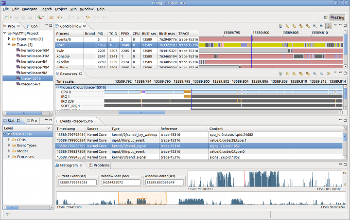
The perspective can be opened from the Eclipse Open Perspective dialog (Window > Open Perspective... > Other).
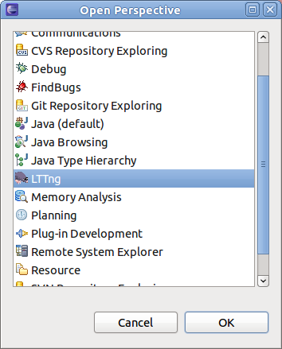
The project view is the standard Eclipse Project Explorer. LTTng being a tracing project, it is shown with a small "T" decorator in the upper right of the project folder icon.
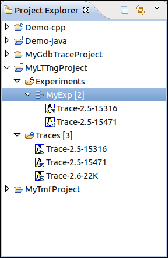
Tracing projects have two sub-folders: Traces which holds the individual traces, and Experiments which holds sets of traces that we want to correlate.
A new LTTng project can be created using the LTTng Project dialog (File > New > Project... or the context menu)
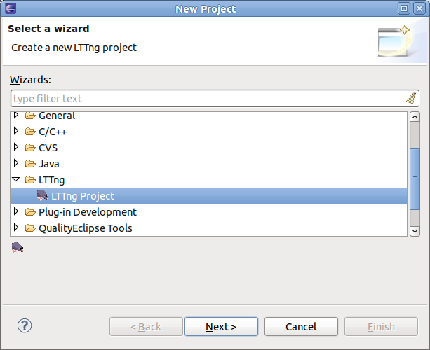
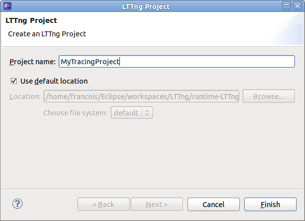
At this point, you can press Finish and complete the project creation or you can press Next to provide a project-specific parser library path.
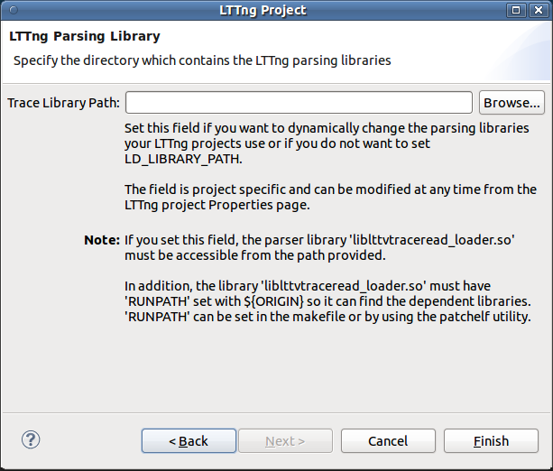
Once the project is created, you can modify the parser library path at any time by selecting the project's property page (right-click on the project, Properties).
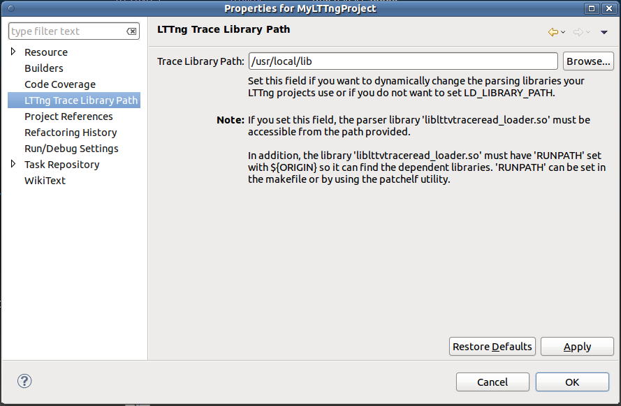
The Traces folder holds the set of traces available for experiments. Traces are imported in the LTTng project using an import wizard triggered by a context menu.
Note: An LTTng trace is actually a composite of multiple channel traces grouped under a folder. It is the folder that has to be imported.

The Experiment folder holds the set of experiments of the project. Experiments are created from the Experiment context menu and are configured from the experiment's context menu.
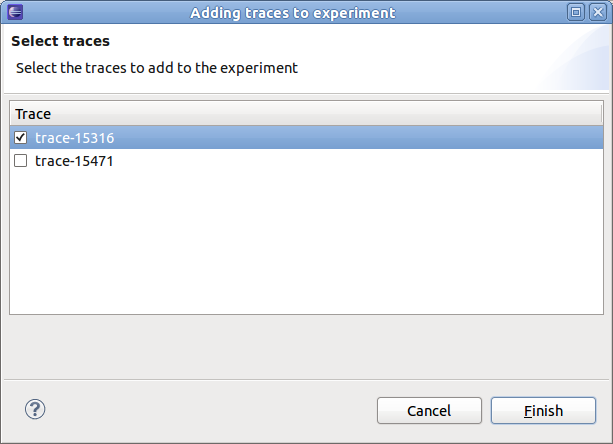
Traces can be also be imported to a project by dragging from another tracing project and dropping to the project's trace folder. The trace will be copied and the trace type will be set.
Any resource can be dragged and dropped from a non-tracing project, and any file or folder can be dragged from an external tool, into a tracing project's trace folder. The resource will be copied or imported as a new trace, however the trace type will be unknown and need to be set manually by the user.
It is also possible to drop a trace, resource, file or folder into an existing experiment. If the item does not already exist as a trace in the project's trace folder, it will first be copied or imported, then the trace will be added to the experiment.
The Events view or editor shows the basic trace data in chronological order in a tabular format.
An Events editor is displayed when a trace or experiment is opened. The editor that has focus determines the currently selected trace or experiment used by the other views.
When opened, the Events view displays the events of the currently selected trace or experiment.
The header displays the current trace (or experiment) name. The table displays the following fields:
The first row of the table is the header row a.k.a. the Search and Filter row.
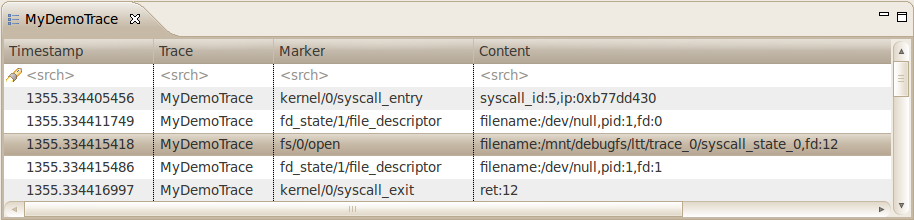
The highlighted event is the current event and is synchronized with the other views. If you select another event, the other views will be synchronized accordingly.
Searching and filtering of events in the table can be performed by entering matching conditions in one or multiple columns in the header row (the first row below the column header).
To toggle between searching and filtering, click on the 'search' (
 ) or 'filter' (
) or 'filter' (
 ) icon in the header row's left margin, or right-click on the header row and select
Show Filter Bar or
Show Search Bar in the context menu.
) icon in the header row's left margin, or right-click on the header row and select
Show Filter Bar or
Show Search Bar in the context menu.
To apply a matching condition to a specific column, click on the column's header row cell, type in a regular expression and press the ENTER key. You can also enter a simple text string and it will be automatically be replaced with a 'contains' regular expression.
When matching conditions are applied to two or more columns, all conditions must be met for the event to match (i.e. 'and' behavior).
To clear all matching conditions in the header row, press the DEL key.
When a searching condition is applied to the header row, the table will select the next matching event starting from the top currently displayed event. Wrapping will occur if there is no match until the end of the trace.
All matching events will have a 'search match' icon in their left margin. Non-matching events will be dimmed.

Pressing the ENTER key will search and select the next matching event. Pressing the SHIFT-ENTER key will search and select the previous matching event. Wrapping will occur in both directions.
Press ESC to cancel an ongoing search.
Press DEL to clear the header row and reset all events to normal.
When a filtering condition is entered in the head row, the table will clear all events and fill itself with matching events as they are found from the beginning of the trace.
A status row will be displayed before and after the matching events, dynamically showing how many matching events were found and how many events were processed so far. Once the filtering is completed, the status row icon in the left margin will change from a 'stop' to a 'filter' icon.
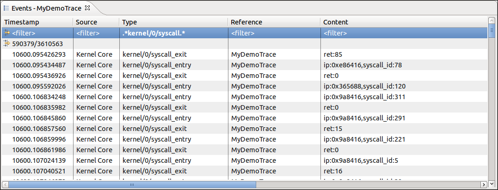
Press ESC to stop an ongoing filtering. In this case the status row icon will remain as a 'stop' icon to indicate that not all events were processed.
Press DEL or right-click on the table and select Clear Filters from the context menu to clear the header row and remove the filtering. All trace events will be now shown in the table. Note that the currently selected event will remain selected even after the filter is removed.
You can also search on the subset of filtered events by toggling the header row to the Search Bar while a filter is applied. Searching and filtering conditions are independent of each other.
Any event of interest can be tagged with a bookmark.
To add a bookmark, double-click the left margin next to an event, or right-click the margin and select Add bookmark.... Alternatively use the Edit > Add bookmark... menu. Edit the bookmark description as desired and press OK.
The bookmark will be displayed in the left margin, and hovering the mouse over the bookmark icon will display the description in a tooltip.
The bookmark will be added to the Bookmarks view. In this view the bookmark description can be edited, and the bookmark can be deleted. Double-clicking the bookmark or selecting Go to from its context menu will open the trace or experiment and go directly to the event that was bookmarked.
To remove a bookmark, double-click its icon, select Remove Bookmark from the left margin context menu, or select Delete from the Bookmarks view.
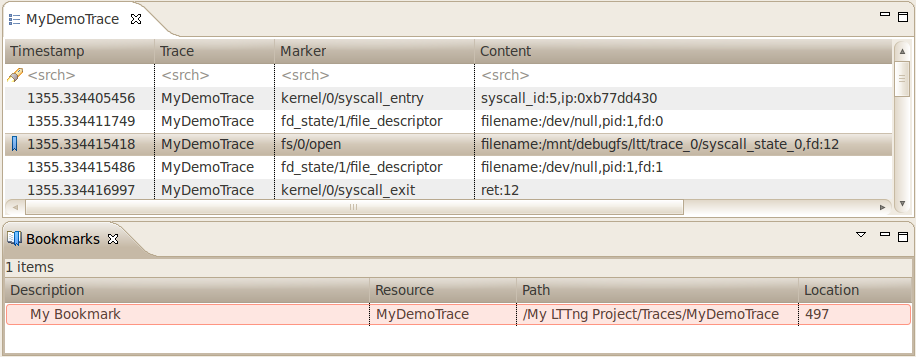
The Histogram View displays the trace events distribution with respect to time. When streaming a trace, this view is dynamically updated as the events are received.
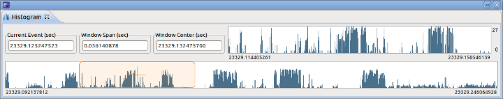
On the top left, there are two data controls:
Both control can be used to modify their respective value. After validation, the other controls and views will be synchronized and updated accordingly.
The large histogram, at the bottom, shows the event distribution over the whole trace or set of traces. It also has a smaller semi-transparent window, with a cross-hair, that shows the currently selected time range window. The time range window can be zoomed in/out by using the mouse wheel. It can also be selected by the mouse and dragged to another region of the trace.
The smaller histogram, on top right, corresponds to the currently selected time range window, a sub-range of the event set. Its size can also be zoomed in/out using the mouse wheel.
The x-axis of each histogram corresponds to the events timestamps. The timestamp of the first and the last event of the respective ranges is displayed. The y-axis of each histogram shows the minimum/maximum number of events in the corresponding histogram bars.
The dashed vertical magenta bar, on the right, shows the position of the last event. The dashed vertical red bar shows the relative position of the currently selected event. The current event can be changed by clicking on the histogram.
Hovering the mouse over an histogram bar pops up an information window that displays the start/end time of the corresponding bar as well as the number of events it represents.
In each histogram, the following keys are handled:
The Control Flow View is applicable to kernel trace data. It displays the list processes in tabular format, sorted by PID, as well as their state transitions over time in a Gantt chart format.
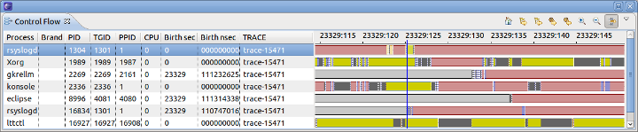
The tool bar options from left to right are:
The process table displays the following fields:
The graphical part shows the state of the corresponding process a la Gantt: the color represents the process state and the length of the bar represents the time span during which the process was in that state. The header corresponds to a time axis. Note that depending on the scale or zooming factor, some pixels might represent more (in fact many, many more) than just one state.
Here's a list of possible colors and their corresponding process state:
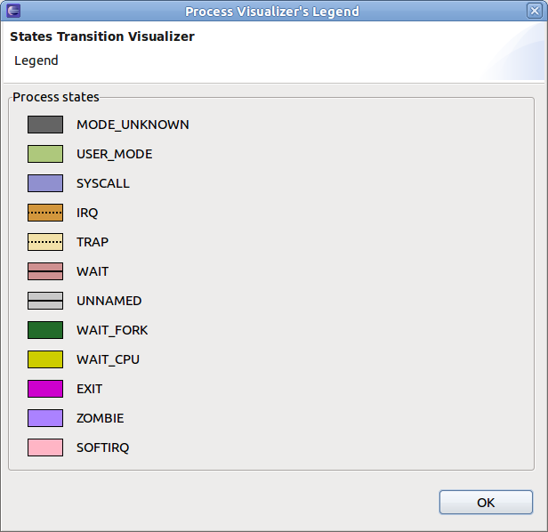
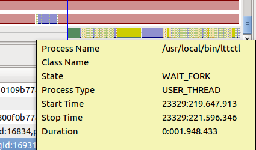
The Resources View is applicable to kernel trace data. It displays the list system resources in tree format, grouped by trace, as well as their state transitions over time in a Gantt chart format.
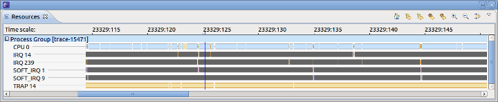
The tool bar options from left to right are:
The resource tree displays the system resources whose state transitions were collected in the trace.
The graphical part shows the state of the corresponding resources a la Gantt: the color represents the resource state and the length of the bar represents the time span during which the resource was in that state. The header corresponds to a time axis. Note that depending on the scale or zooming factor, some pixels might represent more (in fact many, many more) than just one state.
Here's a list of possible colors and their corresponding process state:
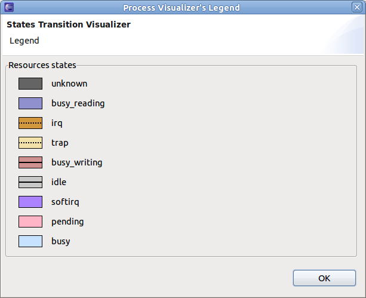
The Statistics View displays the various event counters that are collected when analyzing a trace. The data is organized per trace.
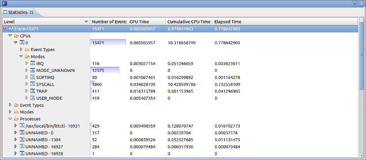
The Latency View is applicable to kernel trace data. The Latency View initiates the analysis of an LTTng trace to determine the elapsed time between 2 related events (the latency), and then to plot the distribution of the latencies.
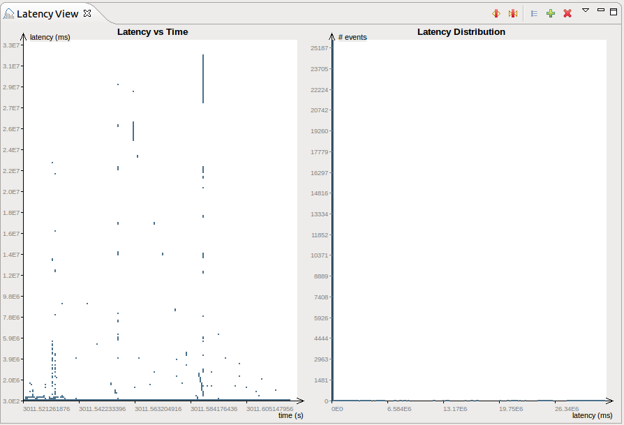
The analysis is done to the current active time range of the LTTng perspective. The Latency View consists of 2 different graphs. The left graph shows the latency in respect to the event time (start event). The right graph shows the latency distribution.
This graph shows the latency in respect of the event time of the first event of the 2 related events. The x-axis of the graph corresponds to the start event time in seconds. The y-axis shows the latency in milli-seconds. Hovering the mouse over an plotted item pops up an information window that displays the start/end event time of the corresponding area in the horizontal direction, the start/end latecny time of the corresponding area in vertical direction as well as the number of latencies that fall into this square.
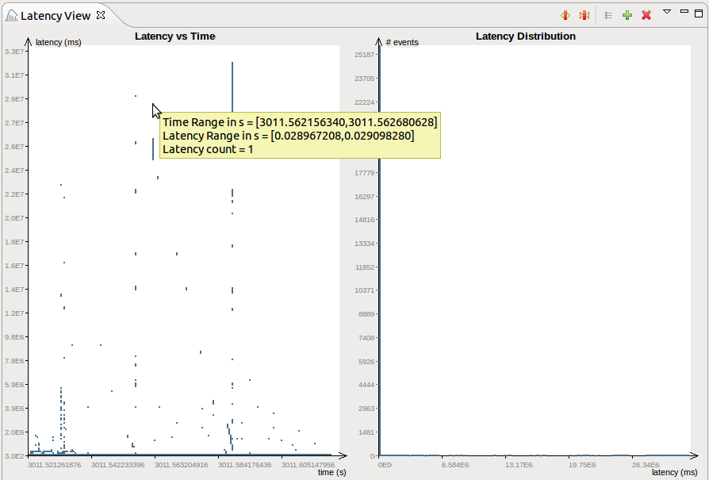
This graph shows the latency distribution. The number of latency values that fall in the corresponding latency range are displayed. The x-axis of the distribution graph shows the latency in milli-seconds. The y-axis corresponds to the number of events (latency occurances). Hovering the mouse over a histogram bar pops up an information window that displays the number of events as well as the number of events it represents.
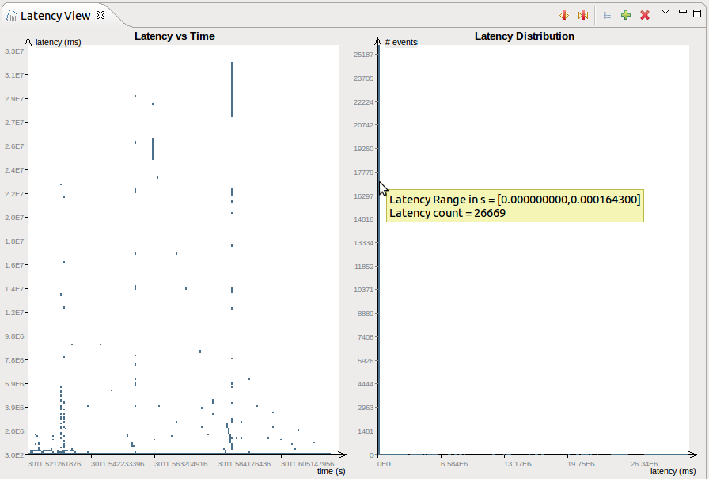
The mouse control is only applicaple for the Latency Distribution graph.
After zooming in the zoom factor is displayed in brackets besides the title Latency Distribution. Additionally, besides the y-axis a warning icon is drawn to indicate that the maximum height is not displayed. Hovering over this icon pops up an information window about warning icon.
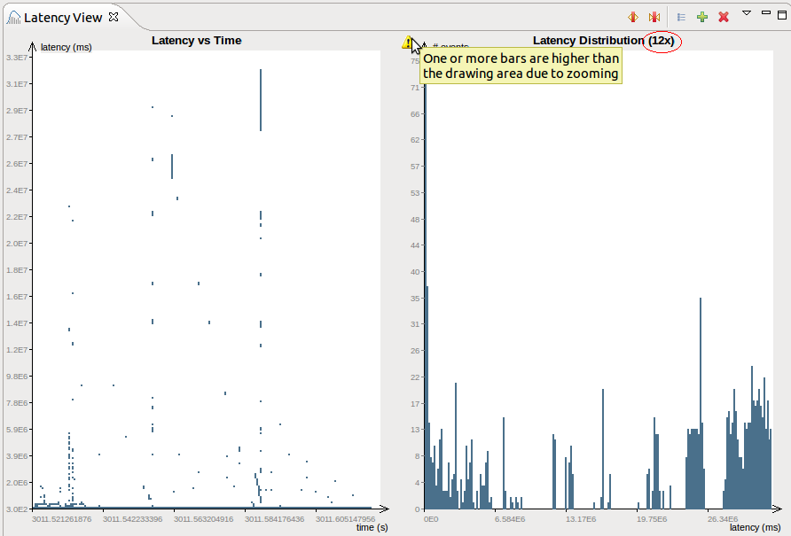
The latency view comes with serveral tool bar buttons and menu items for changing the bar width as well as for listing, adding and deleting of matching events.
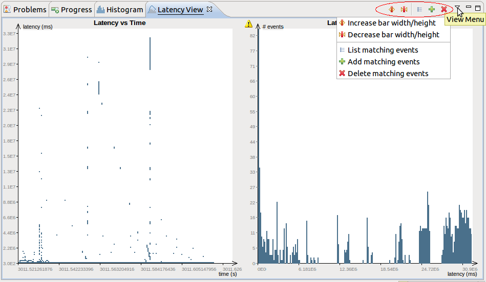

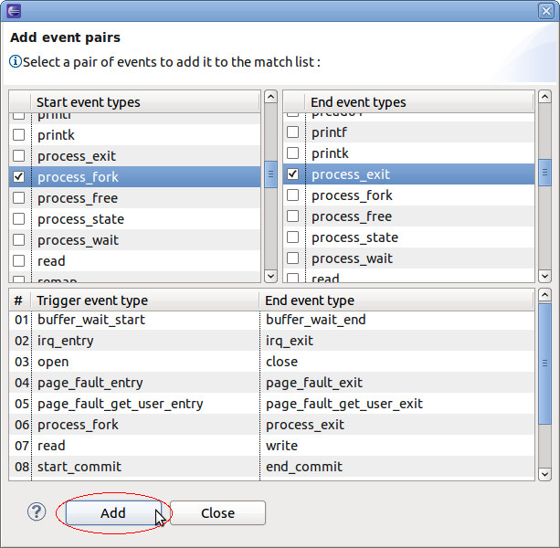
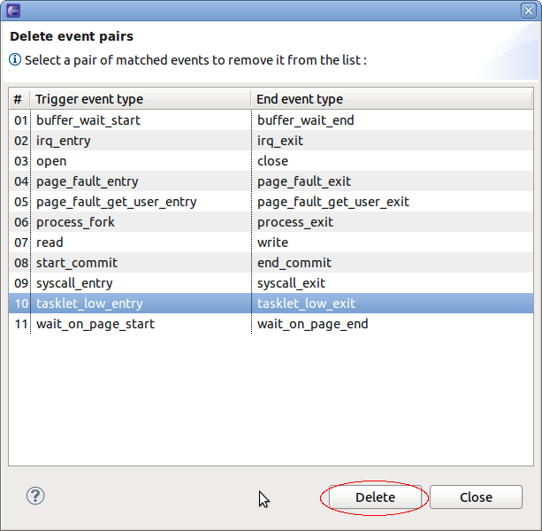
Note that the list of event pairs are presisted in the workspace and will be available after restart of Eclipse.
|
|

|
|
| Getting Started | LTTng Tracer Control |